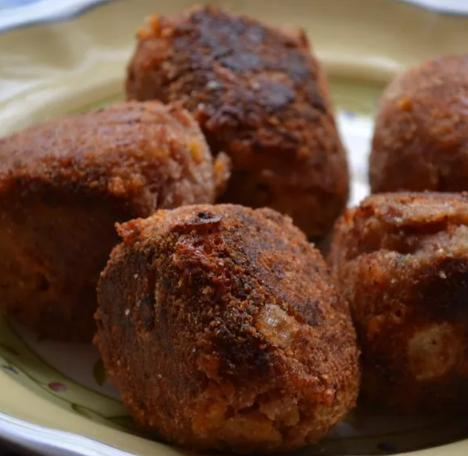

Ham Croquettes Recipe

Description
Delicious and mouthwatering Ham Croquttes, make you crave even more
Referenced from: Allrecipes Ham Croquettes Recipe
Ingredient List
- 1 tablespoon butter
- 1/2 cup onion
- 3 medium green onions
- 1/2 teaspoon garlic powder
- 1 (16 ounce) package sliced honey ham
- 1 1/2 cups shredded Cheddar cheese
- 3 cups dried breadcrumbs
- Salt and pepper
- 4 large eggs
- 2 cups water oil
- 1/8 cup of water
Steps
- Prepare the Ingredients:
- chop the onion and the green onions
- finely chop the honey ham
- divide breadcrumbs
- Melt butter in large skillet over medium heat
- Stir in onion, green onions, and garlic
- Cook until tender (about 10 minutes)
- Transfer onion mixture into a large bowl
- Stir in ham, cheddar cheese, and 1 1/2 cups of bread crumbs
- Beat 3 eggs, stir into ham mixture
- Sprinkle with salt and paper
- Using hand, make golf ball-size balls out of the ham mixture
- Heat vegetable oil in a large skillet over medium heat
- Spread remaining bread crumbs onto a plate
- In a large bowl, beat 1 egg, stir in water
- Dip balls into egg mixture and roll into bread crumbs
- Place ball in hot oil
- Fry until golden brown
- Remove to paper towels to soak up grease and enjoy!